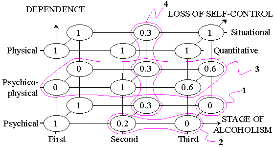
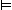

The goal of multi-dimensional fuzzy analysis consists in discovering different properties in multi-dimensional fuzzy distributions represented either extensionally (database) or intensionally (knowledge base). In this paper we show how this approach can be applied to such problems as decision making and knowledge discovery in databases. For uniform and efficient representation of fuzzy knowledge and data we propose a technique of sectioned matrices. For carrying out logical inference we use a new operation of fuzzy resolution which is a generalization of the conventional resolution. With the help of this operation we find fuzzy prime disjunctions which later are used for making decisions in concrete situations. For discovering hidden dependencies in data a new fuzzy covering method is used.Key words: Multi-dimensional fuzzy analysis, Fuzzy decision support systems, Fuzzy resolution, Rule induction, Fuzzy logical inference.
and consists of n-tuples
There is some distribution over the universe of discourse. The general goal of multi-dimensional analysis consists in finding different properties of distributions and their transformations to other forms.
Depending on the character (modality) of the distribution and the form of its representation multi-dimensional analysis can be divided into subdomains. For example, traditional multi-dimensional statistical analysis aims at discovering properties of probabilistic distributions, e.g., mean values or correlation, represented extensionally in the form of a table of data. (Such an important case as the analysis of intensionally represented multi-dimensional probabilistic distributions, e.g., by means of rules, is not studied in this subdomain.)
Note that the key point in the whole approach is multi-dimensionality, i.e., it is precisely multi-dimensionality that is responsible for non-triviality of problems and difficulty of procedures. In particular, such a well known problem as finding satisfiability can be easily reformulated as a problem of multi-dimensional analysis of two-valued distributions over n-dimensional hyper-cube which are represented by means of CNF or DNF. Although multi-dimensional analysis can be used for extensionally represented distributions, e.g., to analyze tables of data, the most interesting and difficult problems arise in analyzing intensionally represented distributions. In the former case the distribution is represented pointwisely, i.e., each statement represents the value of the distribution in one point of the universe of discourse. In the latter case we use elementary distributions over the values of individual variables and some operations to represent multi-dimensional distributions. Thus intensionality of representation is the second key point of multi-dimensional analysis.
In this paper we consider multi-dimensional analysis of fuzzy finite distributions [13]. We suppose that the sets X1,X2,...,Xn called domains are finite and consist of n1,n2,...,nn members, respectively. If the variable xi has only two values (they are supposed to be 0 and 1, i.e., Xi={0,1} and ni=2), then it is said to be boolean variable. In finite case the power of the universe of discourse is equal to n1 n2 ... nn. In the case of all boolean variables the universe of discourse is equal to n-dimensional hyper-cube with the power 2n.
The second our supposition concerns the character of the distributions being studied. Namely, we suppose that the distributions take their values from the interval [0,1]. If the distribution is crisp, i.e., takes only values 0 and 1, it is said to be boolean. If only boolean variables and boolean distributions are used then we obtain just the case well studied in such fields as boolean algebra, propositional calculus, switching theory etc. Multi-dimensional analysis differs from these and other similar directions in that it has its own goal -- finding properties of distributions, although many of these approaches often have very similar and even identical main notions and procedures.
The third main supposition is that the operations of minimum and maximum are used to combine fuzzy distributions. In particular, this property distinguishes fuzzy case from the probabilistic one.
According to these suppositions we assume that any problem domain being considered is described in terms of attributes and their values. If such a suitable set of attributes and values exists then it is referred to as an attribute model of the problem domain [1]. All combinations of the values of attributes represent possible objects or states of the problem domain. By knowledge we mean some fuzzy constraints on possible states of the problem domain represented by the corresponding multi-dimensional fuzzy distribution. If there is not any knowledge about the problem domain then any combination of attribute values is possible (meaningful) and is assigned value 1. Otherwise some states are fuzzily disabled, i.e., they are assigned values which are less than 1 (0 means that the state or object is completely impossible, meaningless).
The first problem is how to represent such knowledge in attribute model by means of multi-dimensional fuzzy distributions. In section 2 we propose a method of sectioned matrices which allows us to represent knowledge and data uniformly and efficiently. The second problem is how to carry out logical inference and make conclusions proceeding from some knowledge and data. It is described in section 3. The third problem considered in the paper is how to generate knowledge from available data. In section 4 we propose a method to transform a sectioned matrix of data into a sectioned matrix of knowledge.
means that the corresponding fuzzy distribution has value 1 in the point First, value 0.2 in the point Second and value 0 in the point Third.
Elementary propositions can be represented only extensionally since they are 1-dimensional, i.e., they can be represented only by enumerating their values in all points of the domain of definition. We will write elementary propositions in the form of one section, i.e., simply enumerating all its values, e.g., {1, 0.2, 0}. One number in the section is said to be a component. Thus the section {1, 0.2, 0} consists of three components 1, 0.2 and 0.
A sectioned vector is defined as a set of sections for all attributes. It can be interpreted as disjunction or conjunction. If the vector is interpreted as disjunction then all its sections are supposed to be combined with the operation of maximum. (From the logical point of view its propositions are combined with the connective OR.) If the vector is interpreted as conjunction then all its sections are supposed to be combined with the operation of minimum. For example, the following constructions are fuzzy sectioned vectors for an attribute model consisting of 3 attributes:
Depending on its interpretation, i.e., on the connective used for combining sections, each sectioned vector represents one or another multi-dimensional distribution over the universe of discourse O. If the sectioned vector d is interpreted as disjunction then it defines the following multi-dimensional fuzzy distribution over the space O:
where d(o) is equal to the value of the distribution in the point o and di are sections of the vector. In other words, to find the value d(o) we have to choose the maximal of n components (one component from each section) corresponding to the values of variables. Note that the section consisting of all 0 is equivalent to its absence.
If the sectioned vector k is interpreted as conjunction then it defines a multi-dimensional fuzzy distribution over the space O in the dual way:
To compute its value in some point we have to take minimal of n components corresponding to the values of variables. If some section consists of all 1 then it is equivalent to its absence.
With the help of disjunctions we can represent general dependencies
between attributes. A number of such disjunctions combined with the operation
of minimum represents a knowledge base.
|  |
Let us consider an example from the field of screening alcoholism [4] where the goal is to determine a patient alcoholism stage (the methods of treatment depend on this diagnosis). The problem domain can be described by the following three attributes:
One way to express our knowledge about the problem domain consists in indicating a state (or a fuzzy interval of states) which is disabled. Then the corresponding combinations of the attribute values are meaningless. For example, if nobody has ever seen anything like the object
(i.e., a patient at the third stage of alcoholism with the psychical dependence and situational loss of self-control) then such a knowledge can be written as the disjunction
which pricks a whole in the unit level distribution (Fig. 1).
Another way to represent knowledge is by means of conventional implications. Each implication can be easily transformed into disjunction by negating its left part. For example, the following two implications
DEPENDENCE = {Psychical : 0, Psychico-physical : 1, Physical : 0} ->
ALCOHOLISM STAGE = {First : 0, Second : 1, Third : 0.6}
Rules represented in the form of implication usually describe dependence of the goal from the rest of the attributes. Sometimes it is convenient to express our knowledge in the form of a backward dependency where we describe properties (symptoms, situations) which are typical of the concrete conclusion (decision). In other words, we suppose that a concrete decision has been made and then ask the question what other conditions it is characterized by. For example, let us suppose that we know one more dependency where situational loss of self-control is usually (degree 0.3) not typical of the second stage of alcoholism:
The whole matrix representing our knowledge consists of 4 disjunctions
1, 2, 3, 4 and looks as follows
|
|
|
|
||
| D = | {0, 1, 1} | {1, 0} | {1, 1, 0} | 1 |
| {0, 1, 1} | {0, 1} | {1, 0.2, 0} | 2 | |
| {1, 0, 1} | {0, 0} | {0, 1, 0.6} | 3 | |
| {0, 0, 0} | {1, 0.3} | {1, 0, 1} | 4 |
and the corresponding multi-dimensional fuzzy distribution is shown in Fig. 1.
Data is represented by means of sectioned vectors interpreted as conjunctions. Each section of one conjunction represents fuzzy constraints on the values of the corresponding attribute independent of the other attributes. Thus observable data used as an input for logical inference and making decision can be represented as one conjunction each section of which contains information about one attribute. If there is not any observable data then such vector of data contains all 1 (all values are possible). If we have known that some attribute cannot take certain value then the corresponding component is decreased in proportion to our degree of confidence. For example, if it is known that the patient does not have physical dependence than it can be written as the sectioned vector
In addition, if we suppose with the degree 0.5 that he does not have quantitative loss of self-control then we obtain the vector
Thus as we obtain and enter new information, components of the vector of data (and the whole distribution values) are decreased. Obviously, each section must contain at least one 1, otherwise our data is inconsistent.
If all components of conjunction are equal to 0 except for the one component in each section, for example,
then such a vector represents the distribution which is equal to 0 in all except for the one points of the universe of discourse where it is equal to the minimal of n non-0 components in each section. Thus by means of such vector we can represent one element of data, e.g., one row of a database, along with the corresponding degree of membership, and with the help of a set of such conjunctions we can represent any multi-dimensional distribution.
Once we have built our knowledge base we are interested in carrying out consultations, i.e., obtaining concrete conclusions on necessary attributes in concrete situations. For example, we might be interested in obtaining possible stages of alcoholism for a patient for whom we know that he does not have physical dependence, i.e., the situation is described by the conjunction
In principle, we could solve this problem extensionally using combination and projection principle [7, 8]. For this it is necessary to calculate the values of 4 distributions corresponding to 4 disjunctions from the knowledge base and the values of 1 distribution corresponding to 1 conjunction representing data in all points from the universe of discourse. Then we have to combine all 5 distributions with the help of minimum operation and to find the ultimate distribution representing both knowledge and data. And finally we have to find projection of this distribution onto the third variable by finding maximal values in 3 subspaces of the universe of discourse each of which corresponds to one value of the goal attribute. In our example we can easily infer (Fig. 1) that the projection on the goal attribute is equal to {1, 1, 0.6}, i.e., in this situation the third stage of alcoholism is disabled with the degree 0.6. Obviously, this method is inapplicable to real examples since the universe of discourse is very large space and it is not possible to compute the distribution values in all its points. Some usefulness of this procedure is that we deeper understand the essence of multi-dimensional logical inference at the level of one point ("pointwise" logical inference). Thus we have to use intensional approaches to logical inference which would explicitly use disjunctions to make conclusions.
One such method also uses combination and projection principle but in other form. In this method we try to make conclusions from individual disjunctions and then combine all results by finding conjunction of all projections. After the first pass when we found all projections of individual disjunctions we should take the conclusions along with the data and use it as new data for the next pass. Then, at the next pass we make new conclusions from individual disjunctions and again add them to the previous data. The process is stopped when no new conclusions can be obtained.
For this method we need a procedure of finding projection of one disjunction and one conjunction. It can be proved that this projection is computed in two steps. First, we have to find componentwise conjunction (minimum) of two sectioned vectors. Then we have to take the sectioned vector interpreted as disjunction resulted from this step and find its projection onto the goal attribute. Projection of one disjunction is equal to its goal section to which we add with the help of maximum operation the maximal component in all the rest of the sections. (For the sake of simplicity in this paper we do not take into account the issue of handling disjunction constant which is connected with the notion of reduced disjunctions [3, 5, 6, 9, 13].)
In our example, first, we find componentwise conjunction of the vector
of data with each disjunction and obtain the matrix
|
|
|
|
||
| D = | {0, 1, 0} | {1, 0} | {1, 1, 0} | 1 |
| {0, 1, 0} | {0, 1} | {1, 0.2, 0} | 2 | |
| {1, 0, 0} | {0, 0} | {0, 1, 0.6} | 3 | |
| {0, 0, 0} | {1, 0.3} | {1, 0, 1} | 4 |
(In this matrix 3rd components in 1st section are equal to 0.) Then we have to find 4 projections of the individual disjunctions onto 3rd attribute. Since all 4 disjunctions involve 1 either in 1st or in 2nd section (non-goal sections), we obtain that all their projections are equal to {1, 1, 1}, i.e., they do not have non-trivial projections onto the goal attribute (addition to any section of the value 1 with the help of maximum operation results in the section consisting of all 1). We have not inferred any conclusion and therefore the procedure is stopped. Comparing this result with that of the previous procedure (pointwise logical inference) we see that this procedure (it could be called "disjunctionwise" logical inference) does not guarantee obtaining exact result. Note that the method of inference on individual disjunctions (rules) followed by combination of conclusions dominates on the application to inference engines. It is caused by its simplicity and that exactness of inference is not the most important requirement in many systems -- frequently it is sufficient if rules work independently.
Let us consider a method of logical inference which guarantees that the conclusion, i.e., projection obtained, will be exact. This method requires that the matrix of fuzzy disjunctions be equivalently transformed into the form where it contains all prime disjunctions [3, 5, 6, 9, 13]. Informally prime disjunctions are the most strong propositions about the problem domain provided that all of them are consequences of the initial matrix, i.e., if any component of prime disjunction is decreased then it is not already a consequence of the matrix. Thus before we can carry out logical inference we have to generate all prime disjunctions for our knowledge base.
One approach to building prime disjunctions is based on a new original operation of fuzzy resolution [3, 5, 6, 9-11, 13, 14] which generalizes traditional resolution in that it can be used (i) in the case of multi-valued variables (proposed in [2]), and (ii) for fuzzy distributions (proposed in [3]). If the resolution is applied to k-th section of two disjunctions u and v then the resolvent w=u<xk>v resulted from this operation is computed as follows:
After the first pass of this procedure we obtain the matrix
|
|
|
|
||
| D1 = | {0, 1, 1} | {0, 1} | {1, 0.2, 0} | 2 |
| {1, 0, 1} | {0, 0} | {0, 1, 0.6} | 3 | |
| {0, 0, 0} | {1, 0.3} | {1, 0, 1} | 4 | |
| {0, 1, 1} | {0, 0} | {1, 1, 0} | 5=1<x2>2  1 | |
| {0, 0, 1} | {1, 0} | {1, 1, 0.6} | 6=1<x1>3 | |
| {0, 1, 1} | {1, 0} | {1, 0.3, 0} | 7=1<x3>4 | |
| {0, 0, 1} | {0, 1} | {1, 1, 0.6} | 8=2<x1>3 | |
| {0, 1, 1} | {0, 0.3} | {1, 0.2, 1} | 9=2<x2>4 | |
| {1, 0, 1} | {1, 0.3} | {0, 0, 0.6} | 10=3<x3>4 |
Note that the disjunction 1 has been absorbed by the resolvent
5=1<x2>2, i.e., resolvent absorbed
one of its parents. The matrix D1 consists of 9 disjunctions
and no one of them is a consequence of another. At the second pass we have
to find all resolvents of the disjunctions in matrix D1.
After absorbing disjunctions 5, 7, 6, 8, 9
we obtain the matrix
|
|
|
|
||
| D2 = | {0, 1, 1} | {0, 1} | {1, 0.2, 0} | 2 |
| {1, 0, 1} | {0, 0} | {0, 1, 0.6} | 3 | |
| {0, 0, 0} | {1, 0.3} | {1, 0, 1} | 4 | |
| {1, 0, 1} | {1, 0.3} | {0, 0, 0.6} | 10=3<x3>4 | |
| {0, 1, 1} | {0, 0} | {1, 0.3, 0} | 11=2<x2>7 5, 7 | |
| {0, 0, 1} | {0, 0} | {1, 1, 0.6} | 12=3<x1>5 6, 8 | |
| {0, 0, 1} | {1, 0} | {1, 0.3, 0.6} | 13=4<x3>6 6 | |
| {0, 1, 1} | {0, 0.3} | {1, 0.2, 0} | 14=5<x3>9 9 |
At the next pass we generate only one disjunction which absorbs disjunction
10
|
|
|
|
||
| D3 = | {0, 1, 1} | {0, 1} | {1, 0.2, 0} | 2 |
| {1, 0, 1} | {0, 0} | {0, 1, 0.6} | 3 | |
| {0, 0, 0} | {1, 0.3} | {1, 0, 1} | 4 | |
| {0, 1, 1} | {0, 0} | {1, 0.3, 0} | 11=2<x2>7 5, 7 | |
| {0, 0, 1} | {0, 0} | {1, 1, 0.6} | 12=3<x1>5 6, 8 | |
| {0, 0, 1} | {1, 0} | {1, 0.3, 0.6} | 13=4<x3>6 6 | |
| {0, 1, 1} | {0, 0.3} | {1, 0.2, 0} | 14=5<x3>9 9 | |
| {1, 0, 1} | {1, 0} | {0, 0.3, 0.6} | 15=3<x3>13 10 |
This is the final matrix of all prime disjunctions since we are not able to generate stronger disjunctions -- all new resolvents are absorbed.
The fact that the matrix contains all prime disjunctions guarantees that projection on any variable obtained as a conjunction of projections of individual disjunctions is exactly equal to the real projection of the corresponding multi-dimensional distribution. Thus to carry out logical inference we impose our data represented as the conjunction f onto each prime disjunction and then combine all their projections onto the goal attribute. For example, in our case we have to change all 3-rd components in 1-st section (i.e., 3-rd column) onto 0 and then it becomes obvious that only disjunction 12 has non-trivial projection onto the attribute x3 which is equal to the exact value {1, 1, 0.6}. If, in addition, we suppose that the patient does not have quantitative loss of self-control, i.e., the whole situation is described by the conjunction
then two more disjunctions fire. Disjunction 4 has projection {1, 0.3, 1}, and disjunction 13 -- {1, 0.3, 0.6}. The final conclusion is characterized by the projection {1, 0.3, 0.6}. We also can find additional information by finding projections on other attributes. In the above situation we see that disjunction 15 gives projections {1, 0.6, 1} onto the attribute x1, i.e., we can conclude that the patient does not have psychico-physical dependence (2-nd value of the 2-nd attribute is disabled with the degree 0.6). By means of the matrix of all prime disjunctions we can also analyze knowledge base. In particular, we can find hidden dependencies, i.e., dependencies which follow from explicitly formulated disjunctions, or find symptoms which can influence one or another attribute.
It is obvious that the method of inference based on finding all prime disjunctions is inapplicable to real problem domains since their number is extremely high. However, it is not necessary to build all prime disjunctions -- for decision support systems it is enough to carry out only several passes especially on early stages of debugging (more disjunctions can be generated when the knowledge base has been created and is ready for use). To compensate the loss of exactness multiple passes of inference can be conducted, i.e., conclusions obtained at earlier passes are used as data along with the old data at the next pass.
This approach to fuzzy knowledge representation and logical inference has been implemented in the fuzzy expert system shell EDIP for MS-Windows 3.x [12, 15].
General covering method is intended for finding prime disjunctions given a matrix of conjunctions (DNF). Prime disjunctions are built gradually by means of searching the space of all possible disjunctions starting from the initial disjunction consisting of all 0 and then increasing its different components. As components increase they influence corresponding columns of the matrix and some its lines are covered. When all lines of the matrix are covered we say that the disjunction obtained is prime one (formally it has to be guarantied by the procedure). An order in which the procedure searches the space of disjunctions is determined by the order in which we increase the components. A line of the matrix is said to be covered if it is a consequence of the current disjunction being built.
An important property of this procedure is that it allows us to search only a part of the whole space of disjunctions which contains required dependencies between attributes. For example, if we are searching for dependencies between the first and the third attributes then we increase components in the corresponding sections only.
Let us suppose that we do not have an expert knowledge about stages
of alcoholism but there is a database of case histories which can be transformed
to the sectioned matrix (fuzzy DNF) consisting of 14 conjunctions
|
|
|
|
||
| K = | {1, 0, 0} | {1, 0} | {1, 0, 0} | 1 |
| {0.2, 0, 0} | {0.2, 0} | {0, 0.2, 0} | 2 | |
| {1, 0, 0} | {0, 1} | {1, 0, 0} | 3 | |
| {0.3, 0, 0} | {0, 0.3} | {0, 0.3, 0} | 4 | |
| {0, 1, 0} | {1, 0} | {0, 1, 0} | 5 | |
| {0, 0.6, 0} | {0.6, 0} | {0, 0, 0.6} | 6 | |
| {0, 0.3, 0} | {0, 0.3} | {0, 0.3, 0} | 7 | |
| {0, 1, 0} | {0, 0.6} | {0, 0, 0.6} | 8 | |
| {0, 0, 1} | {1, 0} | {1, 0, 0} | 9 | |
| {0, 0, 1} | {1, 0} | {0, 1, 0} | 10 | |
| {0, 0, 1} | {1, 0} | {0, 0, 1} | 11 | |
| {0, 0, 1} | {0, 1} | {1, 0, 0} | 12 | |
| {0, 0, 0.3} | {0, 0.3} | {0, 0.3, 0} | 13 | |
| {0, 0, 1} | {0, 1} | {0, 0, 1} | 14 |
(This matrix is semantically equivalent to the above matrix of disjunctions D, i.e., they represent the same 3-dimensional fuzzy distribution.) It is required to discover a dependence between two attributes x1 and x3.
Disjunctions representing dependencies of two attributes contain components
in the corresponding sections only (more exactly, they can contain components
which are less than 1 also in other sections but for the sake of simplicity
we will not touch this issue). Thus we have to gradually increase components
in sections 1 and 3. It can be noticed that the third column (3-rd value
of the 1-st attribute) contains the maximal number of non-0 components
therefore it is natural to cover the maximum number of lines by increasing
the corresponding component. Let us set 3-rd component of the disjunction
to 1 and cover 6 last conjunctions 9, 10, 11, 12,
13, 14 of the matrix which after removing them is equal to
|
|
|
|
||
| K1 = | {1, 0, 0} | {1, 0} | {1, 0, 0} | 1 |
| {0.2, 0, 0} | {0.2, 0} | {0, 0.2, 0} | 2 | |
| {1, 0, 0} | {0, 1} | {1, 0, 0} | 3 | |
| {0.3, 0, 0} | {0, 0.3} | {0, 0.3, 0} | 4 | |
| {0, 1, 0} | {1, 0} | {0, 1, 0} | 5 | |
| {0, 0.6, 0} | {0.6, 0} | {0, 0, 0.6} | 6 | |
| {0, 0.3, 0} | {0, 0.3} | {0, 0.3, 0} | 7 | |
| {0, 1, 0} | {0, 0.6} | {0, 0, 0.6} | 8 |
Now we see that the first two columns both have 4 non-0 components.
We can choose any of them (and we must do it in the case of searching for
all dependencies) but let us choose the second column since it has greater
sum of the components. Then the disjunction {0, 1, 1},{0, 0},{0, 0, 0}
covers 4 last lines 5, 6, 7, 8 in the matrix
K1 and we obtain
|
|
|
|
||
| K2 = | {1, 0, 0} | {1, 0} | {1, 0, 0} | 1 |
| {0.2, 0, 0} | {0.2, 0} | {0, 0.2, 0} | 2 | |
| {1, 0, 0} | {0, 1} | {1, 0, 0} | 3 | |
| {0.3, 0, 0} | {0, 0.3} | {0, 0.3, 0} | 4 |
Now we see that this matrix can be covered by the third section {1, 0.3, 0} (the component 1 covers disjunctions 1, 3, and the component 0.3 -- 2, 4). Thus we obtain that the disjunction
covers the whole matrix of conjunctions and as such it represents a fuzzy dependence between attributes x1 and x3. Notice that it is equal to the prime disjunction 11 from the matrix D3.
[2] Zakrevsky, A.D., 1989, Logical inference in finite predicates, Preprint No.6, Institute of Technical Cybernetics, AS Belorussia, Minsk (in Russian).
[3] Savinov, A.A., 1991, Matrix representation of fuzzy knowledge in attribute models, Preprint, Institute of Mathematics and CC, AS Moldavia, Kishinev, Shtiintsa (in Russian).
[4] Levchenko, V.I., and Savinov, A.A., 1994, Diagnosis by fuzzy constraints in attribute model, 2nd Eur. Congr. on Intelligent Techniques and Soft Computing--EUFIT'94, Aachen, Germany, September 20-23, 382-385.
[5] Levchenko, V.I., and Savinov, A.A., 1993, The matrix representation of fuzzy knowledge and its application to the expert systems design, Computer Sci. J. of Moldova 1(1), 62-84.
[6] Levchenko, V.I., and Savinov, A.A., 1993, Matrix representation of fuzzy predicates and its application in expert systems, Izvestia RAN, Tehnicheskaia kibernetika No.5, 1993, 126-140 (in Russian).
[7] Zadeh, L.A., 1975, The concept of a linguistic variable and its application to approximate reasoning -- Part I. -- Information Sciences 8, pp. 301-357.
[8] Zadeh, L.A., 1979, A theory of approximate reasoning, In: Machine Intelligence 9 (Hayes J.E., Michie D. and Mikulich L.I., Eds.). -- New York: Elsevier, pp. 149-194.
[9] Savinov, A.A., 1993, Fuzzy propositional logic, Fuzzy Sets and Systems 60(1), 9-17.
[10] Savinov, A.A., 1993, Fuzzy propositional logic for the knowledge representation, First European Congress on Fuzzy and Intelligent Technologies--EUFIT'93, Aachen, Germany, September 7-10.
[11] Savinov, A.A., 1996, Some properties of new resolution rule in the logic of possibility distributions, 4th European Congress on Intelligent Techniques and Soft Computing--EUFIT'96, Aachen, Germany, September 2-5, 178-182.
[12] Levchenko, V.I., and Savinov, A.A., 1992, The representation of fuzzy knowledge in the diagnostic expert system shell EDIP, Proc. 2nd Int. Conf. on Fuzzy Logic and Neural Networks---IIZUKA'92, Iizuka, Japan, July 17-22.
Online references
[13] Savinov, A.A., 1997, Fuzzy Multi-dimensional Analysis, online paper, http://www.geocities.com/ResearchTriangle/7220/fmda_0.html.
[14] Savinov, A.A., 1997, New Fuzzy Resolution Operation, online paper, http://www.geocities.com/ResearchTriangle/7220/fresol.html.
[15] Fuzzy expert system shell EDIP, http://www.geocities.com/ResearchTriangle/7220/edip.zip.